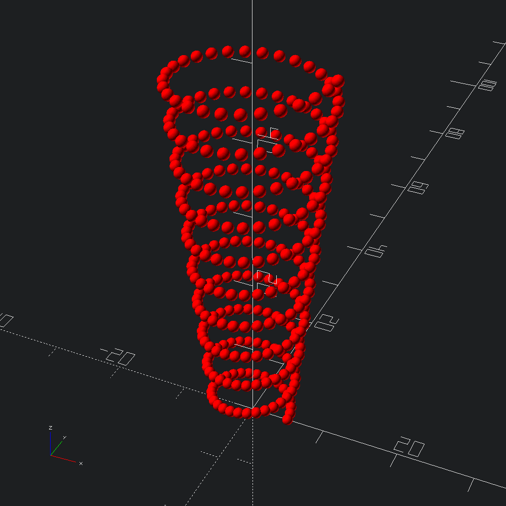
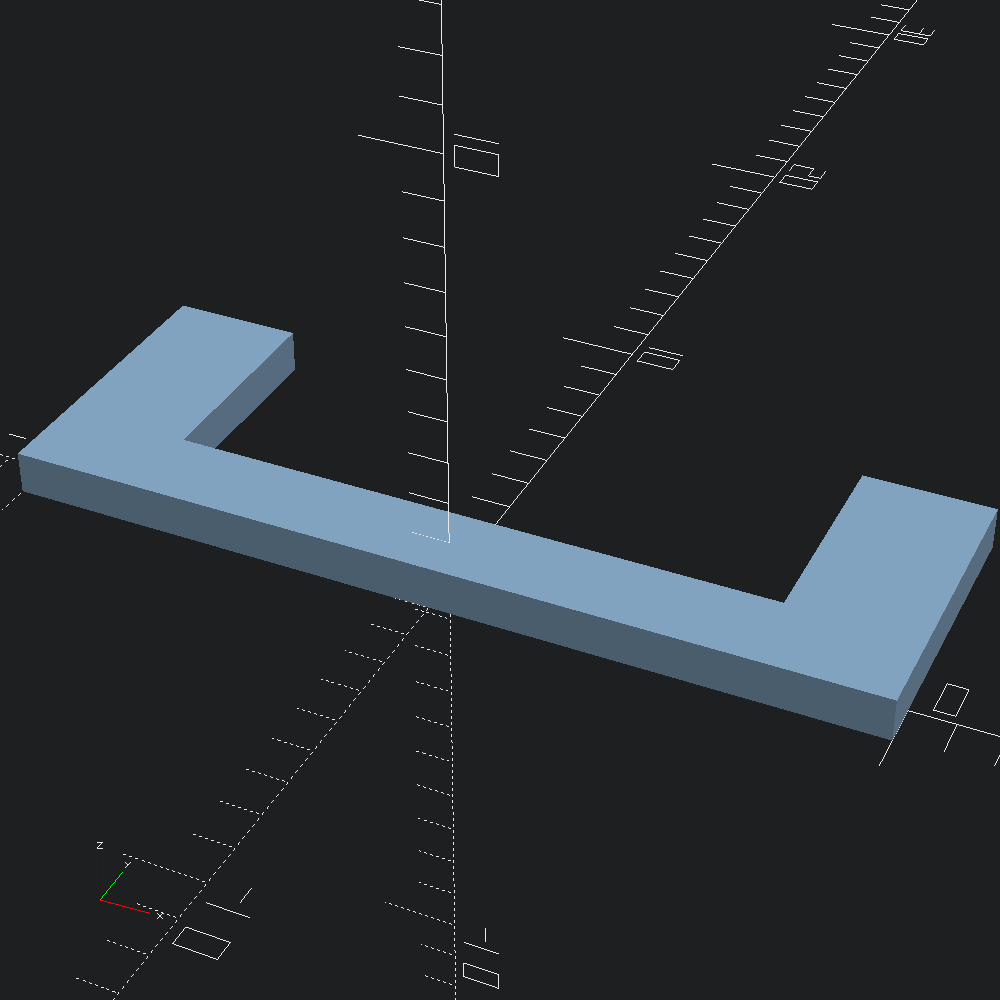
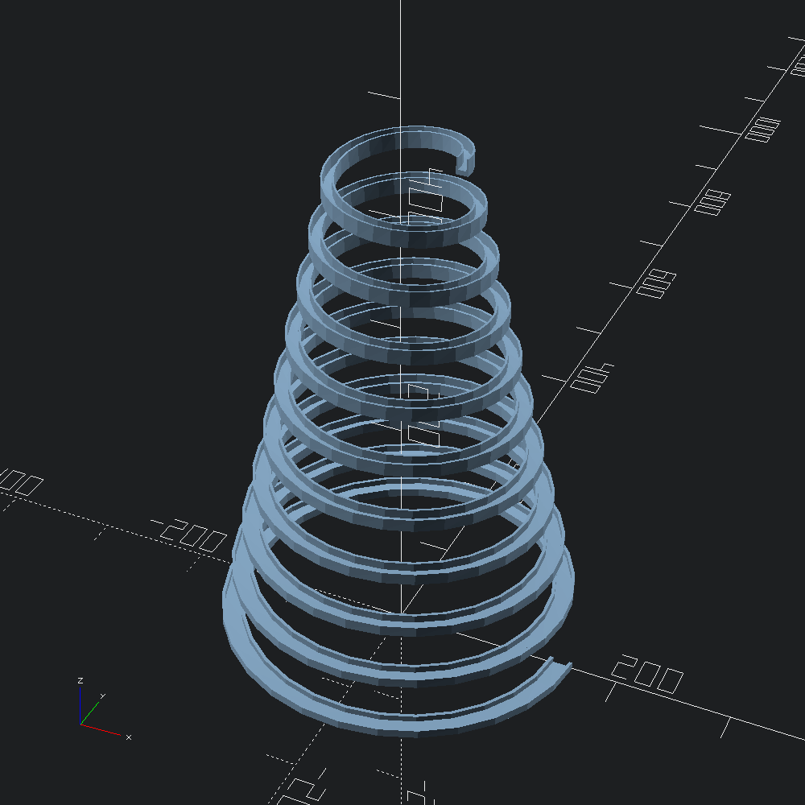

open OCADml
open OSCADmlDraw a right-handed helical path with 10 turns, starting with a radius of 5., and ending with a radius of 10.. With a pitch of 5., it stands 10. *. 5. = 50. units tall.
let () =
Path3.helix ~left:false ~pitch:5. ~n_turns:10 ~r2:10. 5.
|> Debug.show_path3 (fun _ -> Scad.color Color.Red @@ Scad.sphere ~fn:36 0.7)
|> Scad.to_file "helix_path_points.scad"
We'll use a simple elbow shape for our sweeps so that its orientation is easily discernible along the path.
let poly =
[ -10., -1.; -10., 6.; -7., 6.; -7., 1.; 7., 1.; 7., 6.; 10., 6.; 10., -1. ]
|> Path2.of_tups
|> Poly2.make
let () = Scad.(to_file "elbow.scad" (extrude ~height:1. @@ of_poly2 poly))
Sweep our poly along a left-handed helix, while halving its width, and doubling its height. This time we'll start with a wider base radius and narrow towards the top.
let () =
poly
|> Mesh.helix_extrude ~scale:(v2 0.5 2.) ~left:true ~pitch:45. ~n_turns:10 ~r2:50. 150.
|> Scad.of_mesh
|> Scad.to_file "helix_extrude.scad"